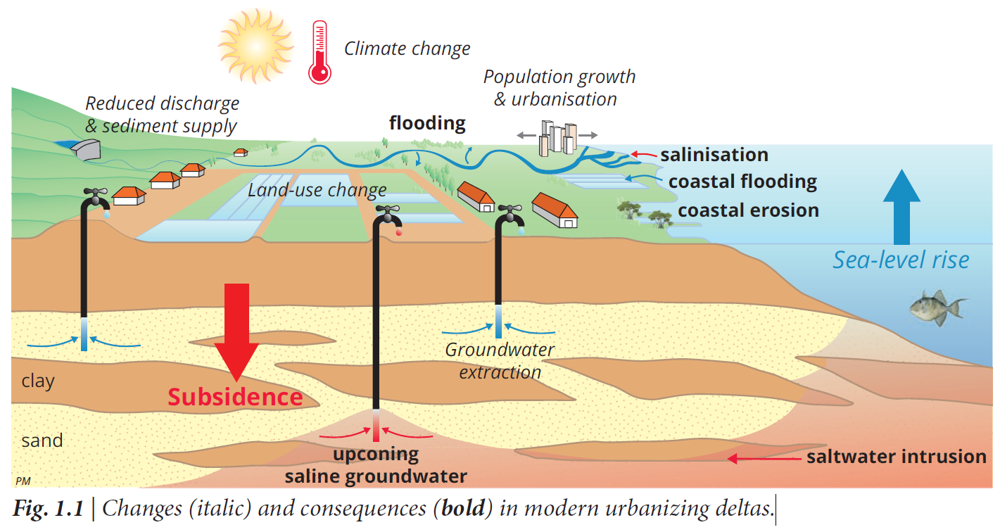
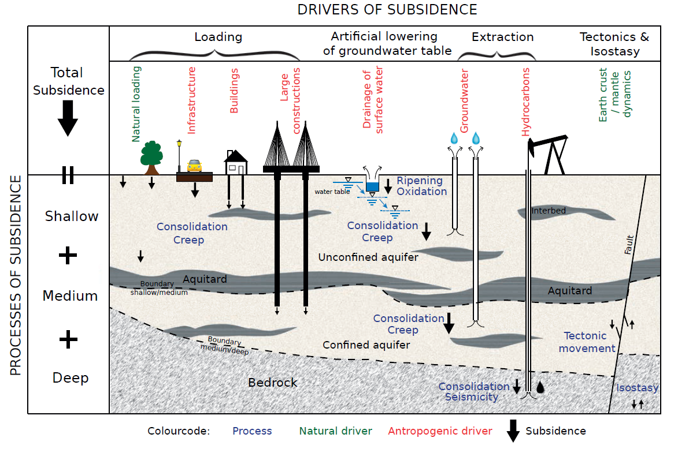

Study of Present and future subsidence of the Vietnamese Mekong delta
The sinking mega-delta: Present and future subsidence of the Vietnamese Mekong delta
The propose of this bolg is to understand and take notes during the study of a PhD dissertation entitled The sinking mega-delta: Present and future of the Vietamese Mekong delta1,written by Minderhoud, Philip Simon Johannes (2019) Utrecht Studies in Earth Sciences.
Summary
The delta is impacted by decreased fluvial sediment supply, salinization, coastal erosion and global sea-level rise. On top of that, annual subsidence rates up to several centimeters per year cause the Mekong delta to rapidly lose elevation, which increases its vulnerability to flooding, salinization, storm surges, coastal erosion and, ultimately, threatens the delta with permanent inundation.
Land subsidence in deltas can be caused by a range of natural and human-induced mechanisms. Examples of natural processes are natural compaction of unconsolidated sediment, tectonics and isostasy. Human activities in deltas can enhance natural subsidence or create additional anthropogenic subsidence. Human-induced drivers of subsidence are, for example, artificial
loading by infrastructure and buildings, phreatic groundwater table lowering and fluid and hydrocarbon extraction from the deeper subsurface (e.g., groundwater, oil or gas). All these drivers result in subsidence of the delta surface.
To create projections of future subsidence and support the development of mitigation and adaptation strategies for sinking deltas, it is a prerequisite to understand driving mechanisms and processes of subsidence and to quantify their individual contribution.
The main 8objective* of the research of this thesis is to understand and quantify the main natural and human-induced drivers and processes causing subsidence, and its impact on current and future surface elevation of the Vietnamese Mekong delta.
To reach this objective, the research was subdivided into three steps:
- determine the present elevation of the delta above local mean sea level,
- quantify the individual contribution of main subsidence mechanisms,
- assess future subsidence and the impact of consequent relative sealevel rise.
The results from this thesis aim to provide a knowledge base on delta subsidence that may facilitate well-informed decision-making and development of sustainable and effective mitigation and adaptation strategies in the Mekong delta and deltas elsewhere in the world facing accelerating rates of relative sea-level rise.
During past decades, following the transformation of Vietnam to an open-market economyin 1986 (Doi Moi), the Mekong delta experienced large-scale anthropogenic land-use changes as a result of increased agricultural production, population growth and urbanization.
As land-use changes can alter the hydrological system or increase loading of the delta surface, they may amplify natural subsidence processes or create new anthropogenic subsidence.
Lowest mean subsidence rates were found for less-human impacted land-use classes, like marshland and wetland forest (6-7 mm/yr), and highest rates for areas with mixed-crop agriculture and cities (18-20 mm/yr). The strength of the relationship between current land use, land-use history and subsidence was assessed by the ability to predict subsidence
rates during the measurement period solely by land-use history, after initial training of all land-use sequences with InSAR-derived subsidence rates.
Urbanization and intensification of agriculture and aquaculture led to a strong increase in groundwater use.
Two dominant mechanisms are responsible for causing subsidence and subsequent elevation loss at the scale of the entire Mekong delta:
1) compaction of shallow Holocene sediments by natural sediment loading, enhanced by human loading and drainage, and predominantly causing high subsidence rates near the coast and 2) extraction-induced subsidence following groundwater overexploitation from the deeper subsurface.
Introduction
During the last century, humans have dramatically modified the natural dynamics of deltas, and put additional pressures on them (Fig. 1.1).

Natureal subsidence drivers and processes
Subsidence can result from a variety of natural processes associated with Earth’s crust dynamics, such as tectonic movement, isostatic adjustment, and compaction of unconsolidated sediments under natural loading (by e.g. sediments, biomass, water or ice) (Fig 1.2).
Human-induced subsidence drivers and processes
Human activities in deltas can enhance natural subsidence processes or create additional anthropogenic subsidence (Fig. 1.2). Shallow compaction processes can be accelerated by increasing load at the delta surface by infrastructure and buildings or by phreatic groundwater table lowering through excessive drainage.

Research objectives and approaches
This research aimed to enhance the quantitative understanding of drivers, mechanisms and processes causing land subsidence in deltas, and building on these insights, to predict future subsidence rates to improve assessments of relative sea-level.
The main objective of this research is:
> To understand and quantify the main natural and human-induced drivers and processes causing subsidence, and its impact on current and future surface elevation of the Vietnamese Mekong delta.
In the first step, the current elevation of the Mekong delta to local sea level is quantified as this determines the vulnerability of a delta system to relative sea-level rise and the relative impact of delta subsidence (Chapter 2).
The second step consists of a quantification of the contribution of potential causes of delta subsidence (Chapter 3-5, 7).
The third step is to evaluate future delta subsidence following different groundwater management scenarios and the impact of consequent relative sea-level rise on the Mekong delta (Chapter 6-7).
Step 1: Determining the current elevation of the delta
- How high is the Mekong delta surface presently elevated above local mean sea level?
Step 2: Quantifying the individual contribution of main subsidence mechanisms
- How much natural compaction occurs at present in the Holocene deposits of the Mekong delta following delta progradation?
- Is land subsidence related to land use in the Mekong delta? Is there a spatial correlation, and which are the causal mechanisms?
- How much land subsidence in the Mekong delta has been caused by increased groundwater extraction during the past decades?
- Which drivers and processes are predominantly causing present-day subsidence in the Mekong delta?
Step 3: Future subsidence of the delta and the impact of relative sea-level rise
- By how much may the Mekong delta subside in the coming century as a result of groundwater extraction, and how much of this subsidence can be mitigated?
- Can restoring natural deposition of Mekong river sediment compensate the elevation loss by subsidence of the delta?
- When will certain parts of the delta fall below sea level in the coming century?
The impact of past, present and future groundwater extraction in the Mekong delta was assessed by creating the first 3D hydrogeological numerical model of an entire mega-delta which could resolve both the hydrogeological and geotechnical response of the multi-aquifer system, using a 1D subsidence module.
Data and Methods
Spaceborne elevation model: SRTM DEM
Th e Shuttle Radar Topography Mission (SRTM) Digital Elevation Model (DEM) was created from phase-diff erence measurements of interferometric synthetic aperture radar (InSAR) collected in February 2000 and was the fi rst near-global topography product for the Earth acquired in a consistent way1.
The SRTM DEM is a digital surface model, describing the elevation of the Earth’s surface including objects at the surface, like buildings and vegetation. Th erefore, the SRTM DEM has a tendency to overestimate actual ground surface elevation. Th ere are diff erent versions of the SRTM DEM available and efforts have been made to optimize the SRTM DEM, for example through vegetation removal.
As this paper aims to assess the effect of using a basic version of the SRTM DEM for SLR assessments, we also selected a readily downloadable and widely-used version of the SRTM DEM without performing postprocessing corrections. We used the SRTM Plus (or void-filled) DEM version 3.0 with an one-arc second grid, approximately ~30 x 30 m and a vertical resolution of 1 meter.
Spaceborne elevation model: MERIT DEM
The high-accuracy global MERIT DEM (Multi-Error-Removed Improved-Terrain DEM) was developed by removing major error components, i.e. absolute bias, stripe noise, speckle noise, and tree height bias from existing DEMs.
The role of sedimentation and natural compaction in a prograding delta
本博客所有文章除特别声明外，均采用 CC BY-SA 4.0 协议 ，转载请注明出处！